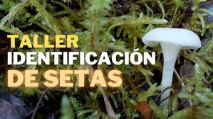
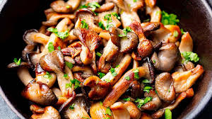
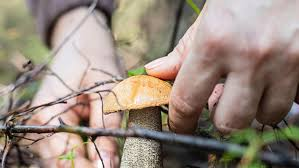
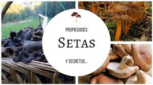
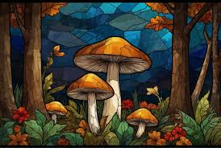
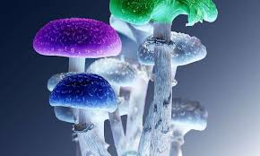
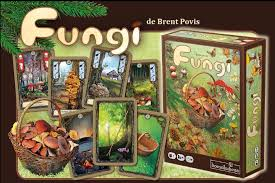
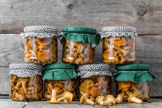

Acerca del Evento
| Las Jornadas de Micología reúnen a expertos y amantes de los hongos para compartir conocimientos, explorar su importancia ecológica y disfrutar de actividades prácticas en la naturaleza. |
Información Importante
¿Dónde?
- Auditorio Municipal
- Plaza Mayor de Burgos, 09001
- Telf. 947000000
- Email: info@jornadasmicologia.org
¿Cúando?
- Domingo, 10 de noviembre, de 10:00 h a 19:00 h
- Lunes, 11 de noviembre, de 9:00 h a 18:00 h
Entrada libre con inscripción previa
Actividades Destacadas







